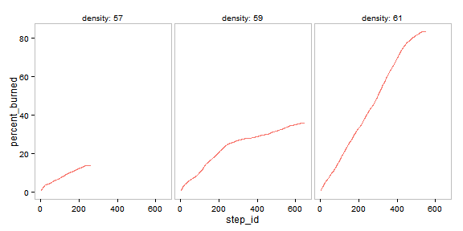

Fire Experiment
This example uses NetLogo Fire model (Wilensky 1997) to demonstrate how to define and run experiments, export view images and get observations based on measures.
library(nlexperiment)
nl_netlogo_path("c:/Program Files (x86)/NetLogo 5.2.0/") Define and Run Simple Experiment
To run a NetLogo model simulation we have to create an experiment object with nl_experiment function. Experiment definition includes a NetLogo model file, declares how to run the model, defines parameter values and what outputs are expected from simulation runs.
For example:
experiment <- nl_experiment(
model_file = "models/Sample Models/Earth Science/Fire.nlogo",
param_values = list(density = c(57, 59, 61)),
while_condition = "any? turtles",
random_seed = 1,
export_view = TRUE
)result <- nl_run(experiment) Find paths to the exported view image files in result$export or just display them by calling nl_show_views_grid function:
library(ggplot2)
nl_show_views_grid(result, x_param = "density")

Temporal Measures
Temporal measures quantify temporal behavior of agent based model. Example below shows how to measure percent of burned trees on each simulation step:
\[ percent_{burned}(t) = \frac{trees_{burned}(t)}{trees_{initial}} \times 100 \]
To define a temporal measure use step_measures element. Measures have to be accurate NetLogo reporters.
experiment <- nl_experiment(
model_file = "models/Sample Models/Earth Science/Fire.nlogo",
while_condition = "any? turtles",
param_values = list(density = c(57, 59, 61)),
random_seed = 1,
step_measures = measures(
percent_burned = "(burned-trees / initial-trees) * 100"
)
)result <- nl_run(experiment) To get the observations from the result object use nl_get_step_result:
dat <- nl_get_step_result(result)htmlTable::htmlTable(head(dat))| density | param_set_id | percent_burned | step_id | run_id | |
|---|---|---|---|---|---|
| 1 | 57 | 1 | 0.403033950012595 | 1 | 1 |
| 2 | 57 | 1 | 0.643734781270117 | 2 | 1 |
| 3 | 57 | 1 | 0.878837918777464 | 3 | 1 |
| 4 | 57 | 1 | 1.08595258753394 | 4 | 1 |
| 5 | 57 | 1 | 1.30706149066585 | 5 | 1 |
| 6 | 57 | 1 | 1.51137731254723 | 6 | 1 |
nl_show_step(result, x_param = "density")
Observations per each simulation run
Stochastic models are usually run several times repeteadly for each parameter set and measured at the end of each run.
In this example we observe percent of burned trees and fire progress for different density parameter. The model will run repetedly 30 times for every parameter value.
experiment <- nl_experiment(
model_file = "models/Sample Models/Earth Science/Fire.nlogo",
while_condition = "any? turtles",
run_measures = measures(
percent_burned = "(burned-trees / initial-trees) * 100",
progress = "max [pxcor] of patches with [pcolor > 0 and pcolor < 55]"
),
repetitions = 30,
param_values = list(
density = seq(from = 55, to = 62, by = 1)
)
)When running experiments with several repetitions we can save some time with parallel option.
result <- nl_run(experiment, parallel = TRUE) dat <- nl_get_run_result(result)One way to show the percent burned as a function of density is to use violin plot:
library(ggplot2)
ggplot(dat, mapping = aes(x = factor(density), y = percent_burned) ) +
geom_violin(fill = "gray90") +
labs(x = "Forest density", y = "Percent burned") +
theme_minimal()

Fire advances from left to right. It is interesting to observe final fire position (left border = 0 and right = 1) as a function of density.
ggplot(dat, mapping = aes(x = factor(density), y = progress/250 + 0.5) ) +
geom_boxplot() +
#geom_jitter(position = position_jitter(width = .1), alpha = 0.3) +
labs(x = "Forest density", y = "Fire progress") +
theme_minimal()